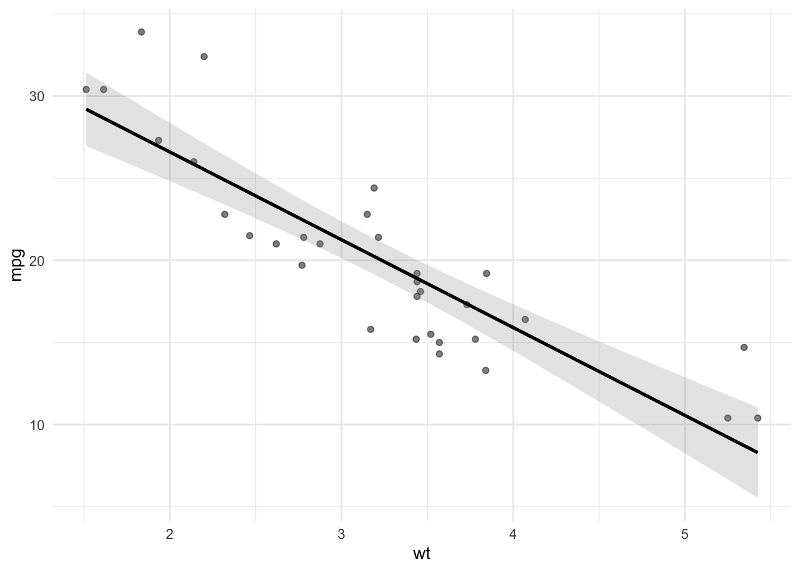

Code
# Load required packages
library(tidyverse)
library(viridis)# Load required packages
library(tidyverse)
library(viridis)Bar plots are ideal for plotting frequencies. Although it is easy to create a simple bar plot, there are several things that can be done to improve on them:
If there are multiple categories, use a fill to further emphasize that the data represents different categories.
Order the categories in terms of their frequency
Add frequency labels to make it easier to see the exact frequencies
There are two basic ways to construct a bar plot in ggplot. The first way is to use the raw data and have ggplot calculate the frequencies.
ggplot(mpg, aes(x = fct_rev(fct_infreq(class)), fill = class)) +
geom_bar(alpha = .85) +
geom_text(
stat = "count",
mapping = aes(label = ..count..),
vjust = -0.5,
color = "grey20",
size = 3
) +
labs(x = "class") +
guides(fill = "none") +
scale_fill_viridis(discrete = TRUE, option = "mako", end = .95) +
theme_minimal()If you want to flip the order from high to low, remove the fct_rev() function from the code.
The second way is to first calculate the frequencies yourself and then use the resulting data frame to plot the frequencies.
counts <- count(mpg, class)
ggplot(counts, aes(x = reorder(class, n), y = n, fill = class)) +
geom_col(alpha = .85) +
geom_text(
mapping = aes(label = n),
vjust = -0.5,
color = "grey20",
size = 3
) +
labs(x = "class", y = "count") +
guides(fill = "none") +
scale_fill_viridis(discrete = TRUE, option = "mako", end = .95) +
theme_minimal()
Stacked bar plots can be used to add additional information to a bar plot.
head(beaver1, n = 5)
## day time temp activ
## 1 346 840 36.33 0
## 2 346 850 36.34 0
## 3 346 900 36.35 0
## 4 346 910 36.42 0
## 5 346 920 36.55 0The following graph is a stacked bar plot.
ggplot(mpg, aes(x = class, fill = drv)) +
geom_bar(alpha = .85) +
scale_fill_viridis(discrete = TRUE, option = "mako", end = .95) 
ggplot(mtcars, aes(x = wt, y = mpg)) +
geom_point(alpha = .85)
ggplot(mtcars, aes(x = wt, y = mpg)) +
geom_jitter(alpha = .85, width = 0.5, height = 0.5)
ggplot(mtcars, aes(x = wt, y = mpg, color = factor(cyl))) +
geom_point(alpha = .85) +
scale_color_viridis(discrete = TRUE, option = "mako", end = .95)
ggplot(economics, aes(x = date, y = unemploy)) +
geom_line()
ggplot(economics_long, aes(x = date, y = value01,
color = variable)) +
geom_line() +
scale_color_viridis(discrete = TRUE, option = "mako", end = .95)